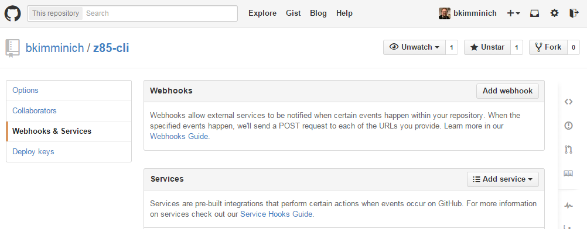
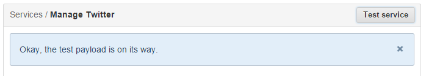
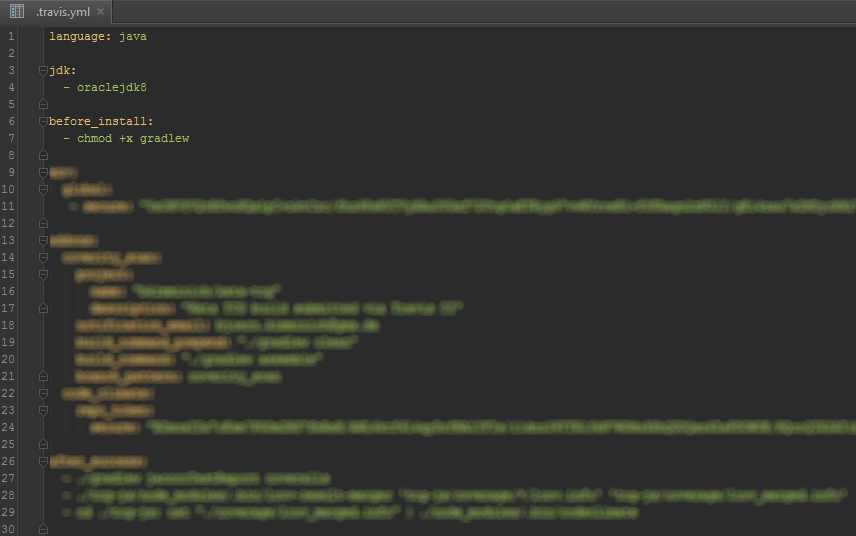
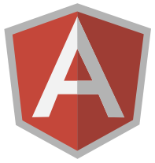
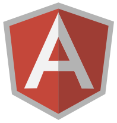

Exploring the
GitHub Service Universe
All-round careful Software Development with GitHub Services
Created by Björn Kimminich / @bkimminich
Björn Kimminich
- Division Architect & Security Officer @ Kuehne + Nagel (AG & Co.) KG
- Lecturer for Software Development @ Nordakademie gAG
- Member & Contributor @ Open Web Application Security Project
- Master of the (highly recommended) Code School Git Path

Disclaimer
This is not a marketing talk. It is a compilation of personal experience gathered while working on two of my own public repositories. I am neither affiliated with nor paid or otherwise reimbursed by GitHub* or any other company behind the products mentioned in this presentation. No product evaluation or comparison study of any kind was conducted prior to choosing the services presented here.
Only services that are entirely free for open source projects are presented in this talk.
*I even bought the shirt I am wearing with my own money.
Agenda
- A very brief introduction to GitHub
- GitHub WebHooks & Services Hooks
- Universe of the polyglot kata-tcg project
- Universe of the full-JS juice-shop webapp
GitHub
Collaborative Git repository hosting service.

If you've never heard about GitHub before...
You don't trust...
...cloud service providers with your code?

Fact #1: GitHub offers free hosting of public Git repositories!
You are still...
...on Subversion?

Fact #2: Offering a sophisticated web-based graphical interface, GitHub still remains 100% compatible with the git CLI.
Or even...
...CVS?

Fact #3: GitHub supports collaborative development through e.g. forking and pull requests.
You might just have been...
...busy exploring other things?

Fact #4: GitHub (optionally) adds an issue tracker, wiki and project page to each repository.
You just realized...
...that you're in the wrong talk? D'oh!

Fact #5: Repository statistics and social extras like Feeds, Followers & Favorites are part of GitHub.
WebHooks & Service Hooks
Individual & Third Party Service Integration
Wait a moment! What are WebHooks?
Simply put: User-defined HTTP callbacks. More specifically: HTTP POSTs that occur when something happens. So basically a simple event-notification via HTTP POST.

A web application implementing WebHooks will POST a message to a URL when certain things happen. When a web application enables users to register their own URLs, the users can then extend, customize, and integrate that application with their own custom extensions or even with other applications around the web. For the user, WebHooks are a way to receive valuable information when it happens, rather than continually polling for that data and receiving nothing valuable most of the time.
WebHooks on GitHub
- Subscription to events on GitHub.com
- Used to integrate individual applications or tools
- Installation on organization or repository level
Event Types & Payloads
- GitHub sends JSON payloads via
HTTP POSTonly - Types & payloads mirror* the Event API

*Some event types only exist for WebHooks, others are only for GitHub internal use. The push payload is the only one that is augmented with more details specifically for the WebHook API.
Contents of a push event payload
Payload additionally contains repository, head_commit, pusher and sender information.
179 pre-defined Service Hooks
WebHooks vs. Service Hooks
- Service Hooks can only be installed on repositories
- Only one Service Hook per integrator
- Supported events depend on service implementation
- Services come with their own unique configuration
GitHub recommends WebHooks for all new integrations using OAuth to manage authorization. The existing github-service repository is not accepting any new services.
Service Hook example: Twitter
WebHooks & Services menu item in repository Settings
Adding Twitter as a Service

The Twitter Service configuration
Authorizing GitHub to tweet from a Twitter account

Configuring message format and trigger branch
Sending a test payload
The Test Service function triggers the real Service once for the most recent commit!
The Tweet composed and published by the GitHub Service

Kata TCG
Code Kata for a two-player trading card game loosely based on Hearthstone - Heroes of Warcraft
Sample Implementations
- Java (JUnit, Hamcrest, Mockito)
- Groovy (Spock)
- Javascript (Karma, Jasmine)
- Clojure (work in progress...)

Polyglot Build
Multi-module Gradle build using language specific plugins to build & test all sample implementations in one execution.

Notifications
NMA
Platform for delivering push notifications from virtually any application to an Android device.
Install free* NMA Android App

*The number of receivable notifications per day is limited. Unlimited premium account available via in-app purchase.
Generate API Keys for each Notifier

Enter API Key in NMA Service config

For convenience you can use the same API Key for all your GitHub repositories.
Notification on every push to GitHub

Amazon SNS
Simple Notification Service enables applications, end-users, and devices to instantly send and receive notifications from the cloud.

Create global topic in SNS Dashboard
Create Subscriber for SNS Topic
Configure SNS Service in GitHub

For convenience you can use the same SNS Topic for all your GitHub repositories.
On push receive sexy JSON* via Email

If you're not so much into JSON I'm sure you'll find a WebHook subscriber that is...
Continuous Integration
Travis-CI
Hosted continuous integration service providing different runtimes for different languages.

Last result for each repo & build history

Detailed build log for failure analysis
Simple setup of CI build for GitHub repos

Build configuration via .travis.yml file

Quality Assurance I
Coveralls
Works with continuous integration servers to provide test coverage history and statistics.
Coveralls repository dashboard
Coverage of latest builds of a repo

Coverage per file for specific build
Drilldown into file coverage
Passing instrumented test results to Coveralls

Setup NMA notification* on a coverage drop of at least 2%

For each new API key NMA automatically creates an email address apikey@nmamail.net that can be used for custom notifications.
Notification on a (forged) coverage drop

Coverity
Provides software quality and security testing solutions.
Configuring Coverity scan on a separate branch
Dependency Management I
Versioneye
Notification System for Software Libraries showing outdated dependencies in different supported project files.
Juice Shop
An intentionally insecure RIA suitable for pentesting and security awareness trainings written in pure Javascript
Technology Stack
 



Build Setup


Quality Assurance II
Codeclimate
Automated code review for Ruby, JS, and PHP providing feedback on code quality and test coverage.
Quality overview in Codeclimate Feed
Quality metrics and test coverage per file

Code smells identified by Codeclimate

Quality trend of the juice-shop repository

Coverage details show a missed function

Merging coverage data and passing it to Codeclimate
Automatic issue creation on new quality issues
Refactoring issue created by Codeclimate

Saucelabs
Automated cross-browser and mobile testing in the cloud for CI.
Continuous Deployment
Nodejitsu
Reliable, scalable, and user-friendly Platform-as-a-Service for node.js apps.
Docker
Open platform for distributed applications for developers and sysadmins.

Dependency Management II
Gemnasium
Monitoring of project dependencies and alerts for updates and security vulnerabilities.
David-DM
Overview of project dependencies for node.js apps.

Project Management
HuBoard
Lightweight Kanban Board offering instant project management for GitHub issues.

Kanban Board based on GitHub issues

DnD for priorization and process flow
Simple creation and tagging of story cards
Status changes synced via issue labels

Authorizing access to GitHub repos

Let HuBoard setup the GitHub integration
Service Hook generated by HuBoard

Bountysource
Funding platform for open-source software where users can create/collect bounties and pledge to fundraisers.

Project overview of issues to place bounties on

Picking an issue to place a bounty on

Placing a 5$ bounty on a Travis-CI issue

A resolved issue with claimed 5$ bounty

Gitter
Chat. For GitHub.

Q&A
Credits
- reveal.js - The HTML Presentation Framework
- GitHub Octodex - The official Octocat gallery
Thanks for your attention!
by Björn Kimminich / kimminich.de
These slides are publicly available on GitHub and Slideshare.